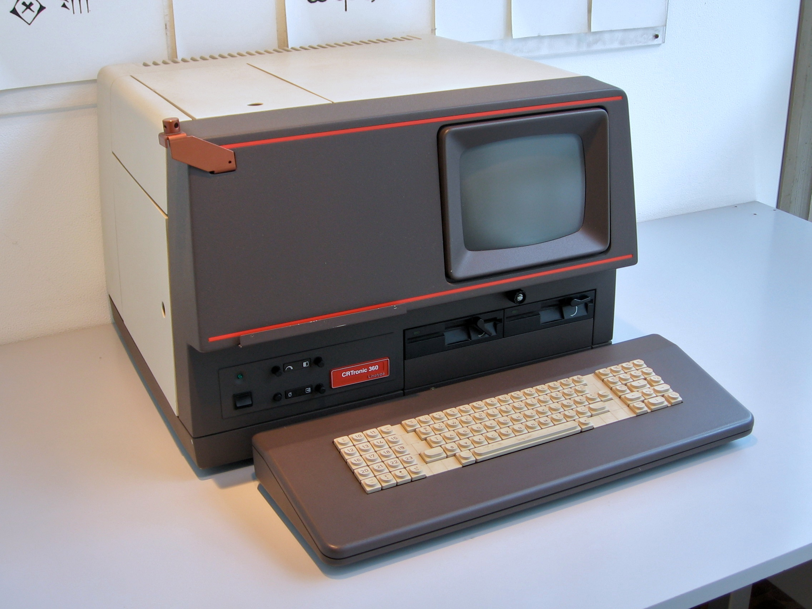
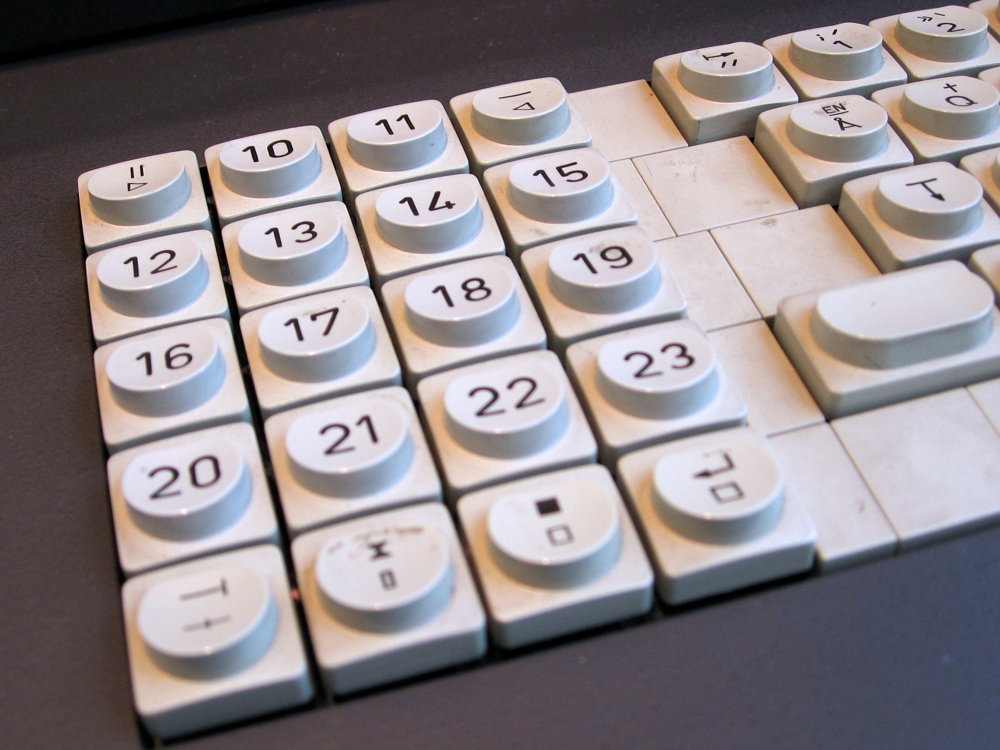
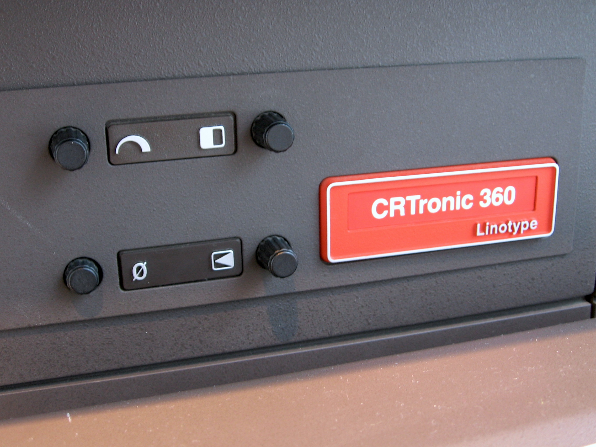

Linotype CRTronic
A digital phototypesetter where the operator reads a movable keyboard and a tiltable CRT, and watches remaining line length as a glowing light bar

Overview
The Linotype CRTronic is an all-in-one digital phototypesetting workstation introduced by Mergenthaler Linotype around 1979 and marketed through the 1980s. It combined a movable QWERTY keyboard, a 9-inch tiltable green-phosphor CRT, floppy-disk storage, and a CRT-based imaging engine in a single desktop cabinet. Unlike the punched-tape phototypesetters that preceded it, composition happened interactively on screen: the operator typed, set parameters live, corrected, and exposed the job directly onto photographic paper or film. The CRTronic line continued through the CRTronic 360 and later models.
Its most unusual interface feature is the analog line-length-remainder light bar: the screen renders the column space still to be filled as a graphical light-bar gauge rather than a numeric readout — instrument-like feedback inside a text-editing task. The keyboard carried 14 programmable memory keys in three levels, and the system supported up to 97 user-defined formats with nesting plus foreground and background hyphenation/justification at once.
Deep dive
The operator sits at one cabinet holding the movable keyboard, the 9-inch tiltable CRT, the floppy storage, and the imaging engine. Composition is interactive: typesetting parameters are shown in the text itself, and the operator sees line breaks, measure, indentation, and tab columns live, editing with a full cursor (home, next word, previous paragraph, foreground/background). The analog light-bar gauge of remaining line length is the oddest detail — a quasi-instrumented feedback channel in a text editor.
A movable keyboard with 14 programmable memory keys in 3 levels (for multicodes), plus 97 nested user-defined formats and macro characters. This gave a typographer a compact, programmable command surface — a step beyond ordinary function keys.
The CRTronic made digital typesetting affordable and desktop-sized, competing with Compugraphic and Monotype. Its interactive-CRT-with-analog-feedback interaction is a distinct corner of professional creative HCI, far from the big-screen graphic workstations in the museum. A period Mergenthaler brochure survives on the Internet Archive and the system is documented in the Smithsonian NMAH Mergenthaler Linotype Company Records.
Team & pioneers
- Mergenthaler Linotype Company. Manufacturer of the CRTronic digital phototypesetter, successor to the Linotype hot-metal line.
Media

